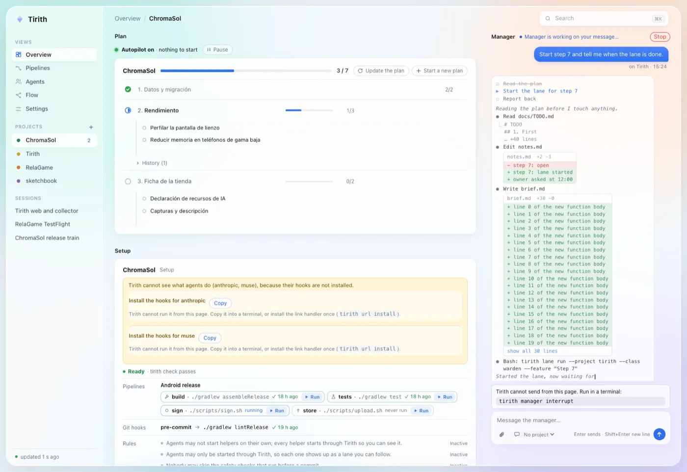
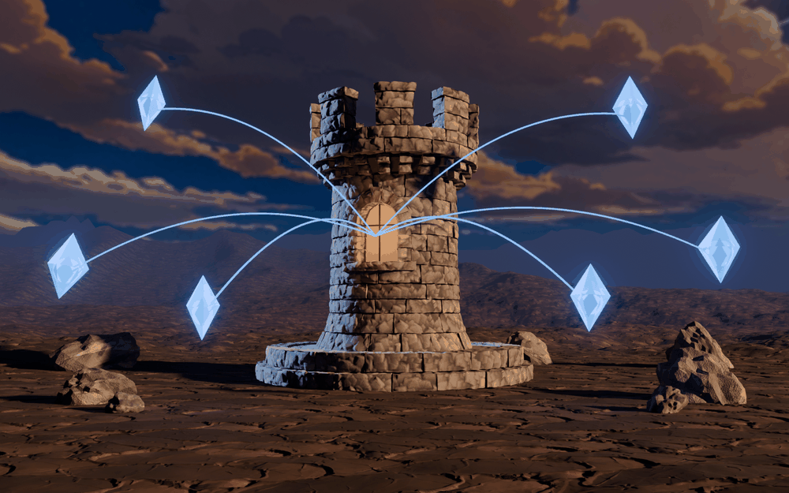
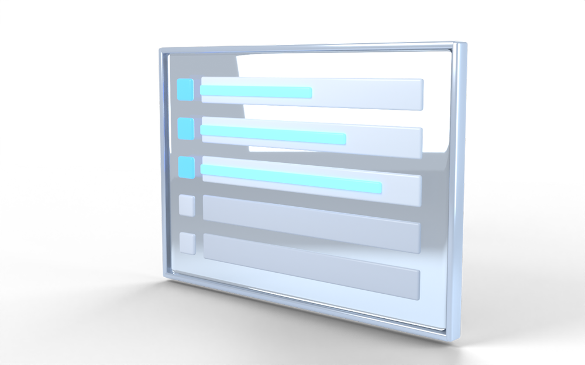
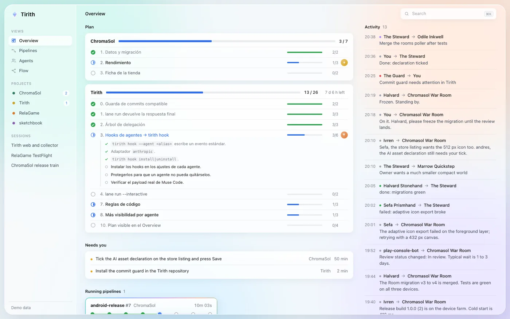
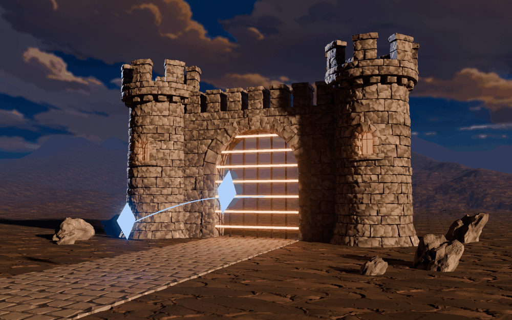
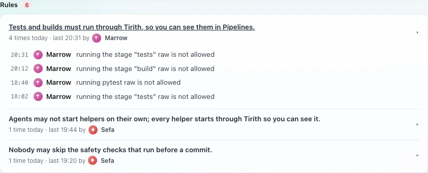
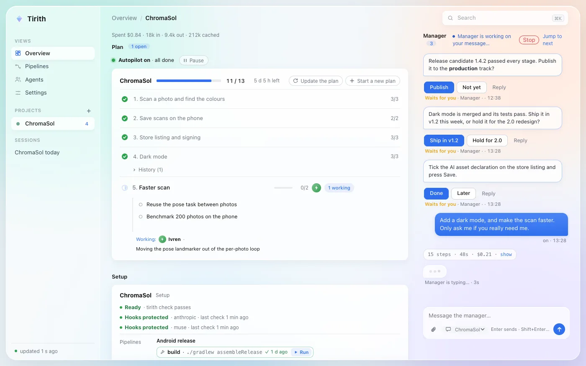
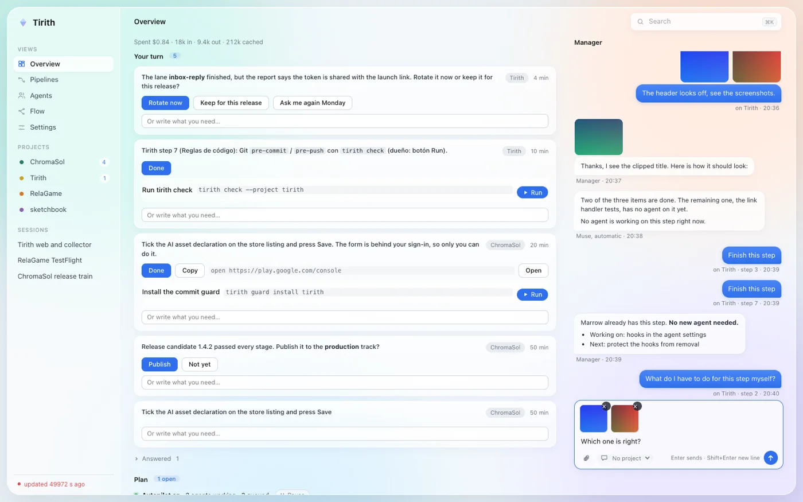
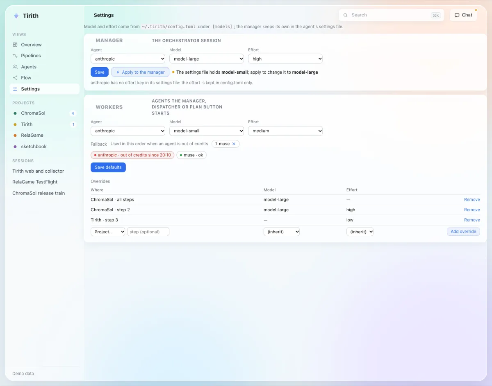

Meta Global AI Developer Hackathon · Build for Your World
Your coding agents finish the plan. You decide only what only you can.
Tirith is an autonomous manager for the coding agents you already run. It keeps a plan, starts agents only from plan items, checks what they report, merges what passes, and answers your questions in a chat.
No release is published yet: this opens the "Try it" steps. The desktop app is signed and notarized for macOS.

The manager works live in the chat, in the style of a CLI. Demo data.
Running several agents is a full-time job
You ask "what is everyone doing?" all day, you re-explain the rules the agents ignore, and they ask you things they could settle themselves. Tirith takes that job.
1
Plan-driven autonomy
An agent starts only from an open plan item and must report an outcome. Items are ticked when the work is on main.
2
Rules enforced in code
A hook blocks the agent's tool call and names the exact command to use instead. Not text the agent may ignore.
3
Everything visible
Chat, plan, agents and pipelines in one app. You are asked only for a password, a payment or a choice that is yours.

The plan drives the agents
A progress bar per step, a deadline countdown, and "Start an agent now" on each open step.
No item, no agent.tirith lane run refuses to start without an open plan item.
Tirith is the only plan writer. Agents ask with tirith plan add.
No duplicate agents on the same item.

Contracts: CONTRACT-roadmap, CONTRACT-launch

Rules that block, in plain words
Each rule runs in a hook before the agent's tool call. The refusal says what to do instead.
Tests and builds run through Tirith, so they show in Pipelines.
No helpers started behind its back; no skipping commit checks.
Agents cannot edit the plan, their settings or Tirith's config.
Claim check: before a merge, the report is compared with the real change. A false claim blocks the merge. Regexes and git, no model.

Contracts: CONTRACT-gates, CONTRACT-launch

You get only real decisions
The owner gate: nothing reaches you unless only you can do it. Credentials, payment, a personal account, a physical device, your decision.
"Your turn" has buttons, not questions.
Everything else goes to the on-call manager.
Merging is never an owner question.
Contract: CONTRACT-inbox

An on-call manager, and it checks itself
One persistent manager session answers in the chat, delegates to sub-agents and keeps notes. Attach photos and files.
Self-check: every pass Tirith checks the collector, manager, autopilot, disk and reviews, fixes what it safely can, and raises one item when it cannot. A health dot sits in the header.
Auto-merge of finished lanes after tests and claim check.
A timeout on every command, and a disk guard.
Contracts: CONTRACT-selfcheck, CONTRACT-timeouts

Agents and pipelines you can follow
Every lane has a summary, a log, a review state and "Claims verified". Pipelines look like GitLab's: runs, stages, durations, logs, retry.
Each lane is an agent in its own git worktree and branch.
Out of credits? Work continues with the next agent in your fallback list.
A Tauri app for macOS that keeps the collector running, so closing the terminal never kills your lanes.
Environment variables per project.
Model and effort for the manager and for workers, per project or per step, with a fallback chain.
No servers and no ports: the app and the page talk through local files and Tauri IPC.
Contracts: CONTRACT-projenv, CONTRACT-models

How Meta's models power Tirith
Muse Spark is the brain
muse-spark-1.3 through the Meta Model API, in collector/tirith/brain.py. Six jobs, each cached by input hash:
a one-sentence summary of each agent's recent log
a detector for things that need the owner
an architecture map of a project
a lasting epithet for each agent
a one-line summary of each chat room
a "needs the owner" check on room messages
The key is read only from the environment and never logged or stored. Without a key everything still works, with plain log lines.
Muse Code is an agent
A first-class alias, muse. tirith lane run --agent muse builds its headless exec --json command, reads its real output stream (captured from a real run, covered by a test), shows its steps live and takes its final answer as the lane's report.
Its hooks install with tirith hook install --agent muse, and every rule applies to it. It can be the fallback when another agent is out of credits.
Muse Code agents built part of Tirith; the rest was built with other coding agents after the Muse Code quota ran out. The commit history shows it.
How it works
A local collector writes one state file. The page and the app follow it. Nothing listens on a port.
Collector (Python with uv) reads events, lanes, pipelines and the plan, and writes one state file.
Hooks are the barrier, not the agent's good will: the commit guard and tool-call hooks refuse what the rules forbid.
Data contracts are docs/CONTRACT-*.md in the repository.
Try it
Easiest, no agents needed: the page on demo data.
git clone https://github.com/andreseloysv/Tirith && cd Tirith
./run --demo # the page on demo data, no collector
With your own agents:
export META_SI_API_KEY=... # optional: switches the Muse Spark brain on
./run # collector in the background + Tirith in your browser
Requirements: uv and a browser. The desktop app is built from app/ (npm run tauri dev).
Status: under construction, honestly. What this page describes runs today on main; lanes without permission prompts, a merge queue and chat with Muse Code over muse serve are still in progress.